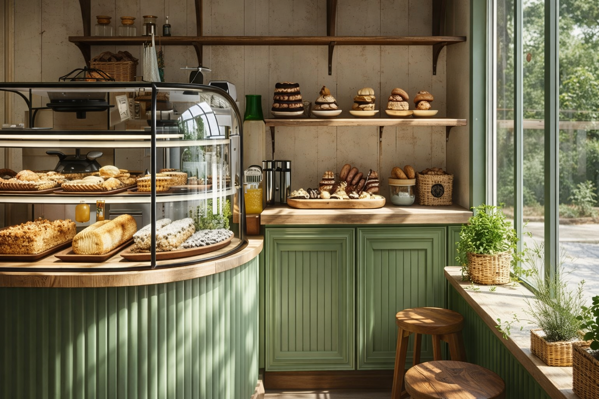

Good Bread
Takes Time
천연발효종 반죽을 최소 24시간 이상 천천히 숙성합니다.
시간이 만든 깊은 풍미와 식감을 담았습니다.
Our Bread Philosophy
Bread That Starts Your Morning
부담 없이 즐길 수 있는 천연발효종 한 끼를 만듭니다.

Simple.
Natural.
Satisfying.
브레드온의 빵은 단순합니다.
천연발효종으로 천천히 숙성해
자연스러운 풍미와 든든한 식감을 담았습니다.
브레드온 빵은 시간을 들여 완성됩니다.천연발효종 반죽을 충분히 숙성해 깊은 풍미와 자연스러운 식감을 만들어냅니다.
우리는 화려함보다 기본에 집중합니다. 매일 먹어도 부담 없는 빵, 바쁜 아침에도 간편하게 즐길 수 있는 한 끼를 만들기 위해 노력합니다.
전날 미리 주문하거나 매장에서 바로 픽업할 수 있어 출근길에도 기다림 없이 간편하게 아침을 준비할 수 있습니다. 브레드온은 바쁜 일상 속에서도 건강하고 든든한 아침을 시작할 수 있도록 돕는 브랜드입니다.